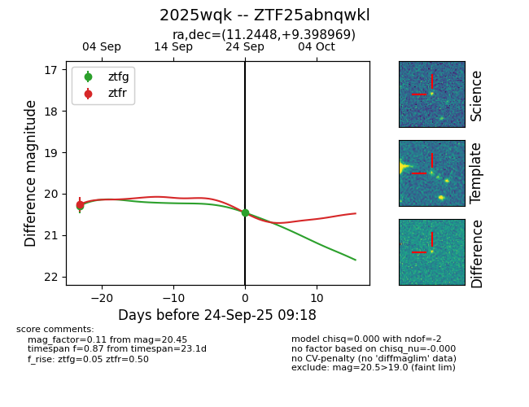
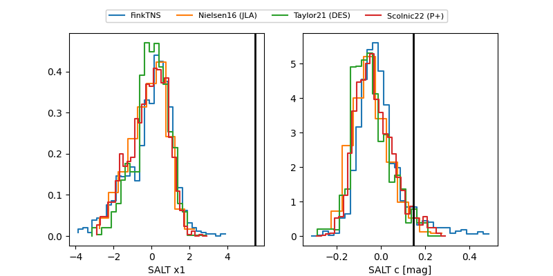

FINK: ZTF25abnqwkl
Lasair: ZTF25abnqwkl
ALeRCE: ZTF25abnqwkl
TNS: 2025wqk
YSE: 2025wqk
ZTF25abnqwkl (ztf,fink)
2025wqk (tns,yse)
equatorial (ra, dec) = (11.2448,+9.39897)
galactic (l, b) = (120.2569,-53.43923)


last ztfg=20.45, ztfr=20.25
2 ztfg, 1 ztfr detections